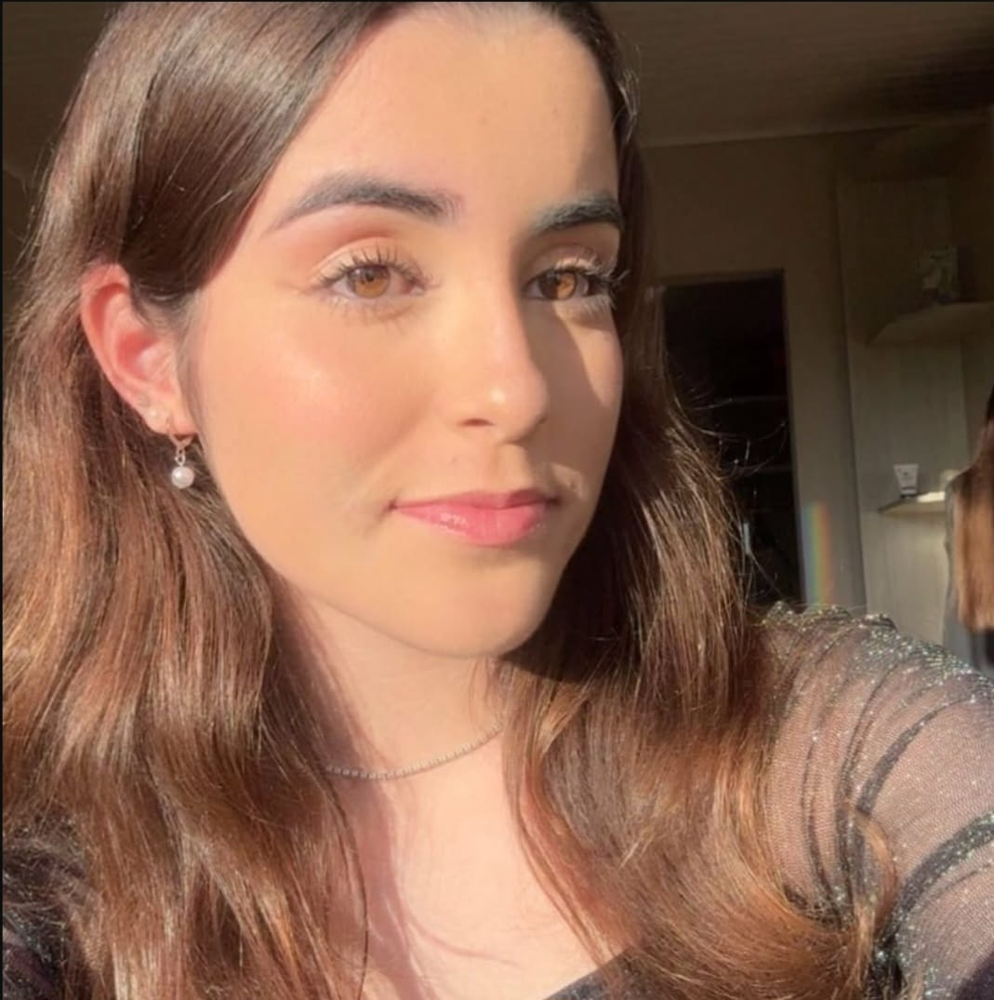

Primeiramente
só queria dizer que é simples, mas fiz de coração, ainda to aprendendo a programar💗
Não quero que você se assuste, na verdade nem to esperando uma resposta, nem precisa responder nada nisso kkkkkk, eu so quero que você veja
Então, você já sabe né, eu sou apaixonado por você desde o ano passado que eu te conheci no grupo, eu quero ir mais devagar dessa vez, mas mesmo assim eu não consigo deixar de expressar o que eu sinto por vc
Algo em você me chamou a atenção, primeiro tua beleza, depois o teu jeito de ser, afinal todo mundo te acha uma querida, e depois disso eu só tive certeza!
E então eu resolvi te mandar mensagem pela primeira vez no seu aniversário, e então começamos a conversar, mas acabou tudo indo muito rápido que não deu certo, mas desde o dia que nos afastamos, toda vez(ou quase) depois da comunhão, eu rezava por você, por tudo, pela tua família, tua vida, que você sempre fosse alegre e com saúde, porque eu só quero o seu bem, rezava pra você continuar a ser essa garota incrível que é e não se perdesse no mundo.
mas então chegou o dia do retiro no guará, e eu tinha que organizar aqueles carros, queria ir com os meus amigos e poder te ver, mas achava que você não queria ficar próxima de mim, então resolvi te perguntar, e acabou que nem fui com vcs kkkkk
quando eu te vi lá, meu coração disparou, porque eu ainda gostava de você, o sentimento não tinha mudado, e eu ficava mais feliz cada vez que via seus olhos, esses olhos:

só nessa foto eu passaria o dia inteiro te elogiando, esses olhos, tua boca, teu sorriso (que ta mais lindo agora), teu cabelo, e muito mais.
mas principalmente, o seu brilho, é o que eu mais admiro em você, a sua personalidade, isso que te faz ser tão especial, a mais mais ✌
durante o retiro eu só pensava em você, até que veio o momento da adoração(aquela foto ficou horrivel senão eu ponhava aqui KAAKKAKAKAKAKKA)
no meio de tanta preocupação, ali foi aonde eu mais senti paz, porque era somente Jesus, Você e Eu, e eu
daria tudo pra poder viver isso de novo, a questão é que eu simplesmente te amo, e não consigo esconder
isso.
e desde o retiro nós voltemos a conversar um pouco, e cá estamos
Mas eu não sei o que você sente por mim, mesmo, não sei entender inderetas, sou bem mais simples que isso, eu não sei se você só me vê como amigo ou algo mais, sinto que muitas vezes sou chato e fico forçando uma conversa que você não quer
eu não quero te forçar, esperar uma resposta agora ou uma declaração, um bloqueio, ou qualquer tipo de coisa, eu só quero que você saiba que eu te amo muito, muito, muito
querendo ou não nossas vidas são bem diferentes, sentimento não se controla ou se manda, então eu entendo MESMO se você não me ama assim, eu só desejo o melhor pra tua vida, comigo ou não, só por favor, nunca deixe de ser essa menina que beira a perfeição
E se por acaso você me ama também, não precisa ser nada agora de imediato, podemos continuar do jeito que ta, tudo no SEU tempo, como dizia São Paulo em uma das epístolas: "O amor sofre paciente", então não quero te pressionar, te afobar, nada disso, o que for pra acontecer vai acontecer, essa é a lei natural das coisas, mas eu esperaria o tempo que fosse pra namorar com você, assim como Isaac esperou pra casar com Raquel, porque o meu maior sonho é ir para o céu, e queria poder
viver esse sonho com você, em busca da santidade
Na real eu queria poder te abraçar, te entregar presentes e flores, espero que esse dia ainda chegue
eu fiz esse site, mas na verdade vc ja sabia de tudo isso que eu falei KAKKAKAKAKAK, porque nunca foi segredo que
EU TE AMOOO
fica bemmm 🤍🤍